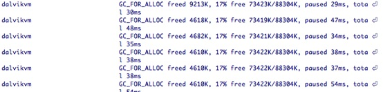
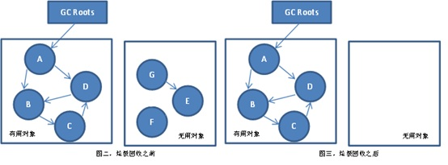
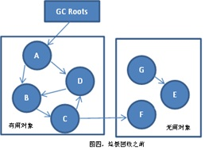
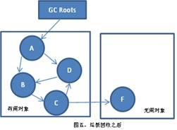
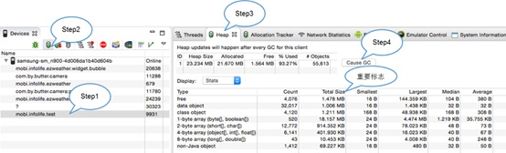
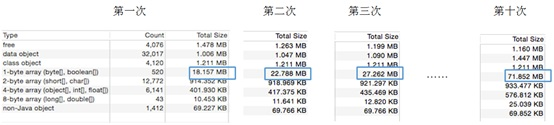
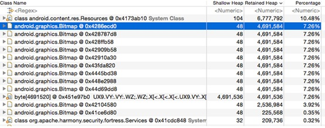
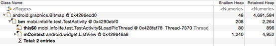
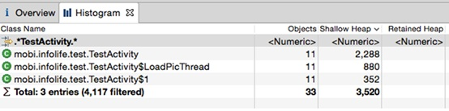

Android内存泄露案例分析
摘要：一款优秀的Android应用，不仅要有完善的功能，也要有良好的体验，而性能是影响体验的重要因素之一。内存泄露是Android开发中常见的性能问题。本文作者以真实案例演示内存泄露从发现、分析定位到最终解决的全过程。
CSDN移动将持续为您优选移动开发的精华内容，共同探讨移动开发的技术热点话题，涵盖移动应用、开发工具、移动游戏及引擎、智能硬件、物联网等方方面面。如果您想投稿、参与内容翻译工作，或寻求近匠报道，请发送邮件至tangxy#csdn.net（请把#改成@）。
一款优秀的Android应用，不仅要有完善的功能，也要有良好的体验，而性能是影响体验的一个重要因素。内存泄露是Android开发中常见的性能问题。这篇文章，通过我们曾经遇到的一个真实的案例，来讲述一个内存泄露问题，从发现到分析定位，再到最终解决的全过程。
这里把整个过程分为四个阶段：
- 第一阶段，现场勘查，分析Bug现象，找出有用线索；
- 第二阶段，初步推断，根据之前的线索，推断可能导致Bug的原因，并且进一步验证推断是否正确；
- 第三阶段，探究根源，找出导致Bug的真正原因；
- 第四阶段，解决方案，研究如何解决问题。
之前我们开发过一款应用，交给QA测试之后，发现有时候界面会卡顿，动画不流畅。经过他反复测试找到了规律，当连续多次打开应用时，问题就会出现。我们根据这个方式重现Bug时，又发现Logcat中频繁输出GC日志（如图一所示）。

这里先简单介绍一下GC，也就是垃圾回收机制，Android通过提供垃圾回收机制来管理内存，当内存不足时会触发垃圾回收，回收没用的对象，释放内存。我们通过两张图（图二、三）来看一下垃圾回收的过程。

这里GC Roots表示垃圾回收器对象，每个节点表示内存中的对象，箭头表示对象之间的引用关系，能被GC Roots直接或者间接引用到的对象ABCD，表示正在使用的对象，不能被引用到的EFG是无用对象，垃圾回收时就会被回收掉。当系统触发一次垃圾回收时，对象EFG就会被回收。
以上就是垃圾回收的过程。在现场勘查这一阶段，我们找到两条非常有用的线索：
- 线索一：连续多次打开应用之后，界面卡顿，动画不流畅；
- 线索二：操作过程中，LogCat频繁输出GC日志。
现在到第二阶段，根据前一阶段找到的线索，当连续多次打开应用，界面卡顿，同时Logcat不断输出GC日志，初步推测我们的应用中存在内存泄漏。首先我们先看一下什么是内存泄露呢？我们通过两张张图来演示，如图四和五。
 
这张图跟刚才演示GC过程的图很像，这时候再触发GC时，EG会被回收，F对于应用来说虽然无用了，却无法被回收，最后导致了内存泄漏。
因此，很可能每次打开应用时，都会产生像F这样的对象导致，内存占用越来越高，系统频繁触发GC。
接下来就要去验证，这里我们利用DDMS工具。
DDMS是虚拟机调试监控服务，它能帮助我们测试设备截屏，设置虚拟地理坐标，针对特定的进程查看它的堆信息等等。
如何利用它来验证我们的推断呢？首先要load出应用的内存快照，这里分为4步，第一步，选中我们要查看的应用，第二步点击Update Heap按钮，这时候DDMS就会通知应用准备收集内存信息，第三步选择Heap标签，heap标签页能够展示出内存的所有信息。第四步点击Cause GC，这时候就会把内存快照load出来。这样DDMS就把内存快照load出来了。具体操作如图六。

Load出内存信息之后，就来分析我们应用中是否存在内存泄漏，分析内存泄漏的关键的数据之一，就是Total Size。
重复打开应用时，如果不存在内存泄漏的话，Total Size只会在一定范围内波动。如果我们的推断正确，连续打开应用，Total Size会持续增加。接着我们就来测试分析，连续打开应用，如图七。

这里展示了第一二三，以及第十次打开时Total size的截图，Total Size一直在增大，其中1-byte array增大最为明显，1-byte array表示的是byte[]，或者boolean[]类型的数组。所以我们能够得出结论：打开应用时，确实存在内存泄漏。
确认了问题，接下来就要探究问题的根源。每一个应用运行过程中，都会持有上万甚至百万个对象，我们就要分析这些对象在内存中的状态，看哪些对象对应用来说已经没用了，但是还在占用着内存。
这个过程我们用到了MAT。MAT是一款功能丰富，运行速度非常快的堆内存分析工具。它能够快速的分析堆中的所有对象，计算出每个对象占有的内存大小。它的功能非常强大，分析完内存之后，它还能够帮找出可能导致内存泄漏的对象，列出占用内存比较大的对象，它提供查询java容器对象使用率的等功能，这些功能对于我们分析应用的内存都非常有帮助。
它既有独立的安装程序，也有针对eclipse的插件，我们根据自己的需求下载相应的程序。我们使用的时候也非常简单，可以利用刚才介绍的DDMS工具，把内存快照导出到.hprof文件中，然后MAT直接打开这个hprof文件就行了。独立安装程序的下载地址：
http://www.eclipse.org/mat/。
根据前面的测试，我们经过几次操作就导致1-byte array的Total Size从20M增大到70M，平均每次增加5M左右，这个size是比较大的，因此推断有内存占用比较大的对象导致的内存泄露。结合MAT的Dominator Tree功能，我们来着手分析，Dominator Tree能列出内存中所有对象，以及他们占用内存的大小。

这里是Dominator Tree的一张截图，先介绍两个名词第一个Shallow Heap，表示对象本身的内存大小，包括对象的头以及成员变量等，第二个Retained Heap表示：一个对象本身以及它持有的所有对象的内存总和，也就是GC时，回收一个对象所释放的所有内存空间。从这张图中可以看到，Retained Heap最大的时Resources对象，但是Resource是System Class对象，也就是系统管理的对象，也不会是引起我们内存泄漏的原因，我们不用去分析它。
第二大的就是Bitmap对象。从前面的介绍我们已经知道，如果一个对象能被GC Roots直接或者间接引用，它就不能被回收，那我们就来看一下Bitmap到GC Roots的引用路径，看Bitmap时被哪个对象持有的。选中Bitmap，右键选择，Path To GC Roots，再选择execlude weak references，因为弱引用是不能阻止垃圾回收的，所以我们直接排除弱引用。
下面图九就是Bitmap到GC Roots的引用路径。其中LoadPicThread对象前面有个小红点，这个小红点就表示这个对象是被GC Roots直接持有的。

所以整个引用路径就是GC Roots引用着Thread，Thread引用着我们的Activity，而Activity中包含了Bitmap对象。
这时候当前界面已经退出了，但是Thread 仍持有着Activity 的引用，导致Activity 和它引用的内存例如Bitmap不能被回收。这时候问题的真相基本浮出水面了。
为了进一步确认我们的结果，我们从另一个角度进行验证，看内存中是否多个被Thread持有的，不能回收的Activity的对象？借助MAT的Histogram功能，它能列出内存中的所有类，以及每个类的实例个数。

如图十，MAT提供了正则搜索的功能，可以根据类名搜索，我们这里搜索得到的结果是11个Activity对象，所以进一步验证成功。就是因为我们创建的那个Thread持有着Acitivy的对象，导致关闭之后Activiy不能回收。
根据以上的分析，我们找到了引发内存泄露的代码。
- class TestActivity{
- protected onCreate(Bundle savedInstanceState) {
- LoadPicThread loadPicThread = LoadPicThread();
- loadPicThread.start();
- privateclass LoadPicThread extends Thread {
- @Override
- public run() {
- super.run();
- while
- …load data…
- Thread.sleep(
- } catch (InterruptedException e) {
- e.printStackTrace();
class TestActivity{
protected void onCreate(Bundle savedInstanceState) {
LoadPicThread loadPicThread = new LoadPicThread();
loadPicThread.start();
}
private class LoadPicThread extends Thread {
@Override
public void run() {
super.run();
while(true) {
…load data…
try {
Thread.sleep(1000*60*5);
} catch (InterruptedException e) {
e.printStackTrace();
}
}
}
}
}
LoadPicThread是TestActivity的一个内部类，它隐式的持有着TestActivity的实例，LoadPicThread会每5分钟去服务器请求一次数据，这个Thread一直都不会结束，而且每次打开界面时都会创建一个这样的Thread。所以我们这里导致内存泄漏的根本原因就是长生命周期对象（Thread）持有短生命周期对象（Activity）的引用，导致Activiy退出之后，不能被回收。
最后到解决问题阶段，找到问题之后怎么解决呢？我们想到了两种解决方案。
第一，将Thread从Activity移除，可以放到后台服务中，这样Activity与Thread之间就不会相互依赖，如果Thread要做的事情跟Activity业务逻辑不是很紧密，例如在一些数据缓存的操作，这时候就可以用这种方案。
第二，当Activity结束时，停止Thead，让Thread与Activity的生命周期保持一致，一般可以在onDestory方法中，给Thread发送一个结束信号。
以上是就是我们从发现到解决内存泄漏的整个过程。其实在Android开发过程中，很多错误的代码，引发内存泄露。例如，不当的使用Context；构造Adapter时，没有使用缓存的convertView等等。
最后总结一下：
第一，作为Android开发人员，只有深刻理解Android常用组件的工作机制，以及应用中各个对象的生命周期，才能尽量避免写出导致内存泄露的代码；
第二，当程序出现问题时，首先要找到触发它的场景，就像这个案例中，我们根据QA提供的重现方式，经过反复测试和观察，最终定位到问题。而在我们日常开发中，可能遇到更加复杂的问题，在面对复杂的情况下，只有找到触发问题的关键场景，我们才能快速的定位问题，并加以解决。
第三，强大的工具是帮助我们分析和定位问题的利器，例如前面用到的DDMS和MAT工具，他们能够让我们能够深入到应用的内部进行探索和研究，从而快速的分析到问题的根源。所以开发人员应该学会运用这些强大的工具，来分析解决各种疑难问题。
作者简介：
张权威，资深Android开发工程师，现就职于琥珀天气，为琥珀天气主力开发人员，负责App架构设计与开发。
预告： 2015中国移动开发者大会（MDCC 2015）将于10月15-16日在北京新云南皇冠假日酒店召开。大会特设五大技术专场：平台与技术iOS、平台与技术Android、产品与设计、游戏开发、企业移动化、虚拟现实专场。此外，大会更是首次举办国内极具权威影响力的IoT技术峰会，特设硬件开发技术与嵌入式开发两大专场。大会将聚集国内最具实力的产品技术团队，与开发者一道进行最前沿的探讨与交流。
第一时间掌握最新移动开发相关信息和技术，请关注mobilehub公众微信号（ID: mobilehub)。